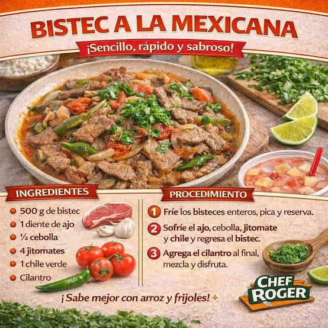

Receta de Bisteces
Volver al Inicio

Gran receta de la abuelita , bisteces a la mexicana
- 500 g de Bisteces
- 1 diente de ajo
- 1/2 cebolla
- 4 jitomates
- 1 chile verde
- cilantro
Indicaciones para la preparacion del platillo
- Frie los bisteces.
- Sofrie el ajo , cebolla , jitomate y chile y regresa al biastec.
- Agrega Cilantro al final , mezcla.
- Disfruta